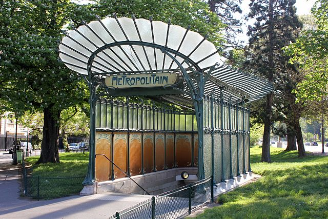

The story of the Paris Metro stretches from today until 1845
Paris Metro Timeline
1845
Need for a metro identified due to congestion, Parisians wanted their own system without interference from the national train system
1883
Compagnie du chemin de fer métropolitain de Paris, the Paris Metropolitan Railway Company (CMP) is founded
1890
The metro is planned for right-hand side drive and narrower-than-normal tunnels to prevent suburbs outside Paris from connecting their left-hand side national train system
It's rumored this was also to keep the poorer suburbs from bringing poverty into Paris
1898
Initial construction began, streets were dug up and tunnels built below
Cut-and-cover construction

CMP style entrance by Hector Guimard
1900
Line 1 is opened at Paris World Fair
1904
A competing network Nord-Sud is given permission to construct 3 more lines
Nord Sud mosaic sign
Nord Sud mosaic sign
1920
Most of the initially planned 10 lines of CMP are completed at remarkable speed
1930
Nord-Sud goes bankrupt and is bought by CMP
1940s
Some planned stations never open due to WW2, as workers were enlisted
French resistance use the tunnels to conduct guerilla attacks
CMP merges with the Parisian bus company to become Régie Autonome des Transports Parisiens (RATP)
1970s+
As the metro reaches the suburbs, the RATP begins the RER project, distinct from the metro, providing regional rail.
1998
Line 14 opens, being the first automated metro line
2007 - 2011
Several lines extended
Line 1, the busiest line is retrofitted with the same automation package